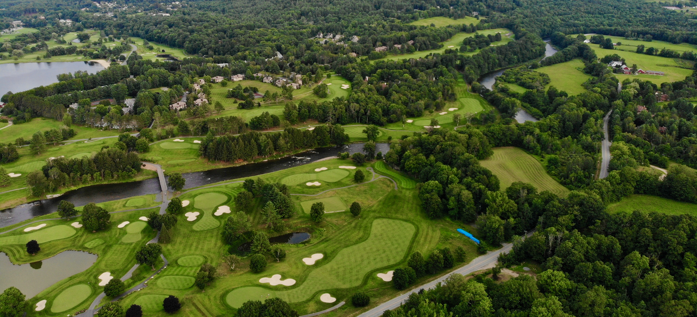

Golf Course Greenskeeper
Worked Alongside Assistant Superintendents to maintain two 18-hole courses and gain experience in the turf industry. Learned about rotation of chemicals, nutrient cycling in turf, and best practices for management.
Jobs Included:
- Aerification (Toro procore 648)
- Spray fairways (Toro multipro 5800)
- Granular fertilize greens
- Hand watering
- Change cups/tees
- Sod and seed projects
- Roll greens
- Large tractor operation
- Normal grounds crew responsibilities (hand mow greens, hand rake etc.)
Snowmaker
Worked 3 years as a Snowmaker at the Dartmouth Skiway and Middlebury Snow Bowl. Overnight shifts included operating snowmobiles, heavy machinery, maintaining good snow quality, and firing up/shutting down the system.